S939_N260195_model_draft_02
프린트 배색 뷔스티에 탑
S939 + N260195 · 핑크 / 아이보리
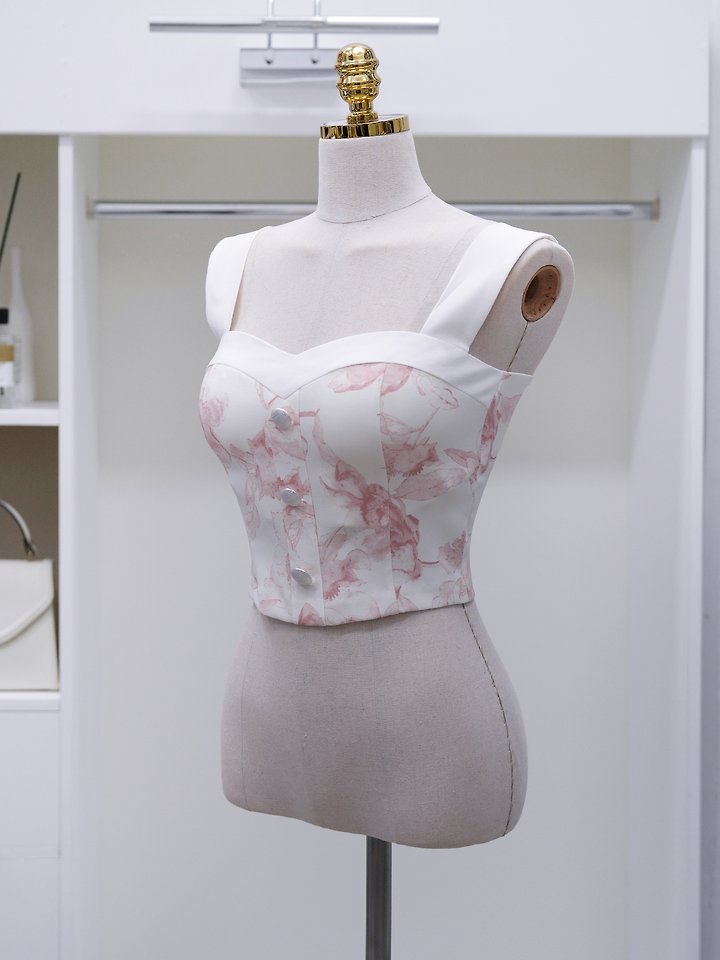
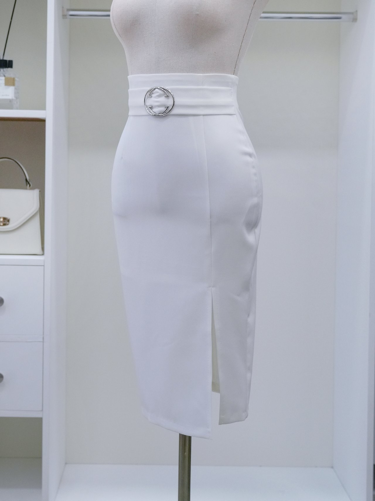
생성 후보output/drafts/S939_N260195_model_draft_02.png
- 컬러O
- 기장O
- 디테일O
- 원단△
- 실루엣O
현실감4/5
승인 가능 · 핵심 4 / 4
하의가 실물보다 길어지지 않았는지와 프린트 배색·허리 버클·원단 광택을 최종 확인.
NICE · PRODUCT ACCURACY REVIEW
실제 상의와 실제 하의, 생성 후보를 나란히 비교합니다. 거래처 분위기보다 마네킹컷·제품컷의 컬러와 구조를 우선합니다.
S939_N260195_model_draft_02
S939 + N260195 · 핑크 / 아이보리


승인 가능 · 핵심 4 / 4
하의가 실물보다 길어지지 않았는지와 프린트 배색·허리 버클·원단 광택을 최종 확인.
S940_S729_vendorref_01
S940 + S729 · 화이트 / 블랙
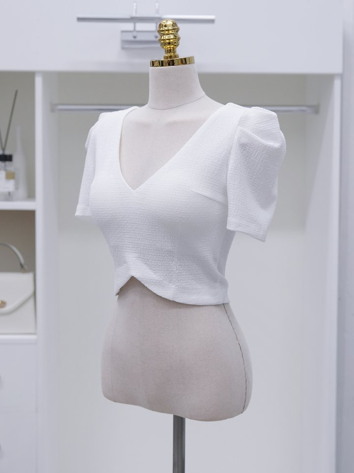
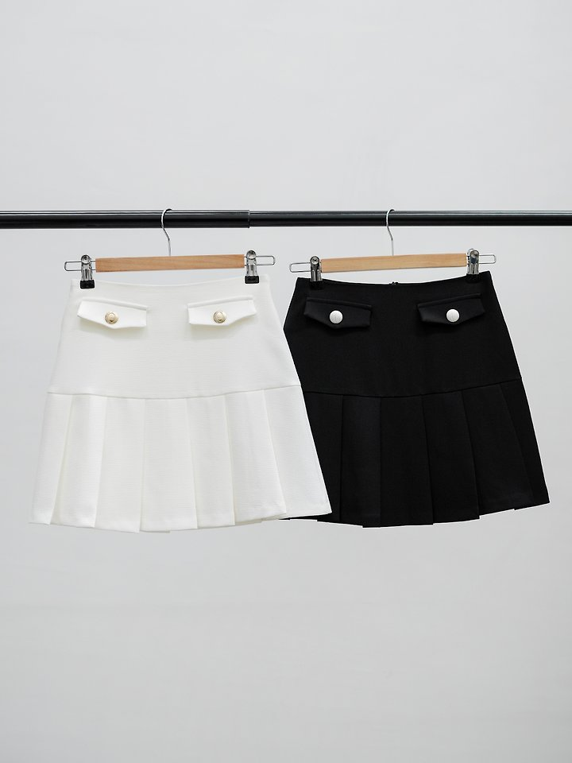
즉시 탈락 · 핵심 3 / 4
기존 후보는 실제와 다른 스커트 컬러로 즉시 탈락. 블랙 스커트로 재생성.
S940_S729_model_draft_02
S940 + S729 · 화이트 / 블랙
조건부 승인 가능 · 핵심 3 / 4
A안. 정면 전신 메인컷과 배색·비율·배경은 우수. 상의 원단 텍스처와 하의 포켓·버튼·절개·플리츠 위치를 실제 제품과 추가 대조 후 최종 승인 권장.
S941_N260007_model_draft_01
S941 + N260007 · 연핑크 / 블랙
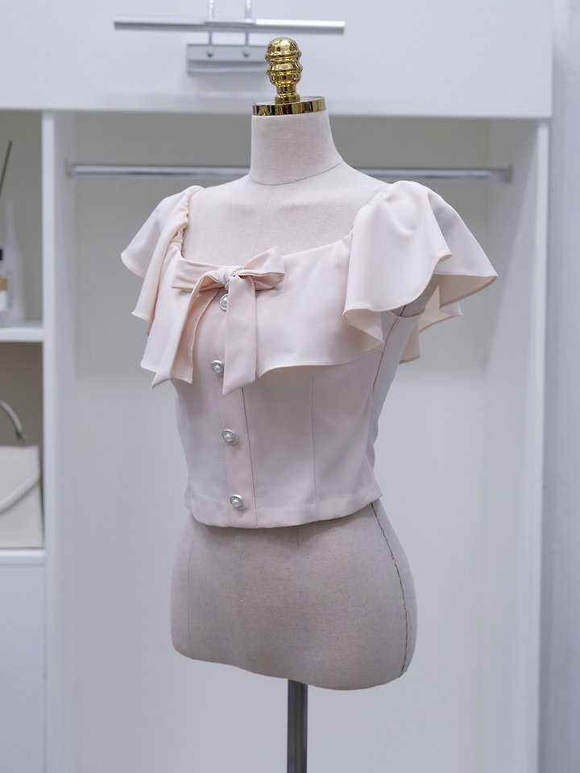
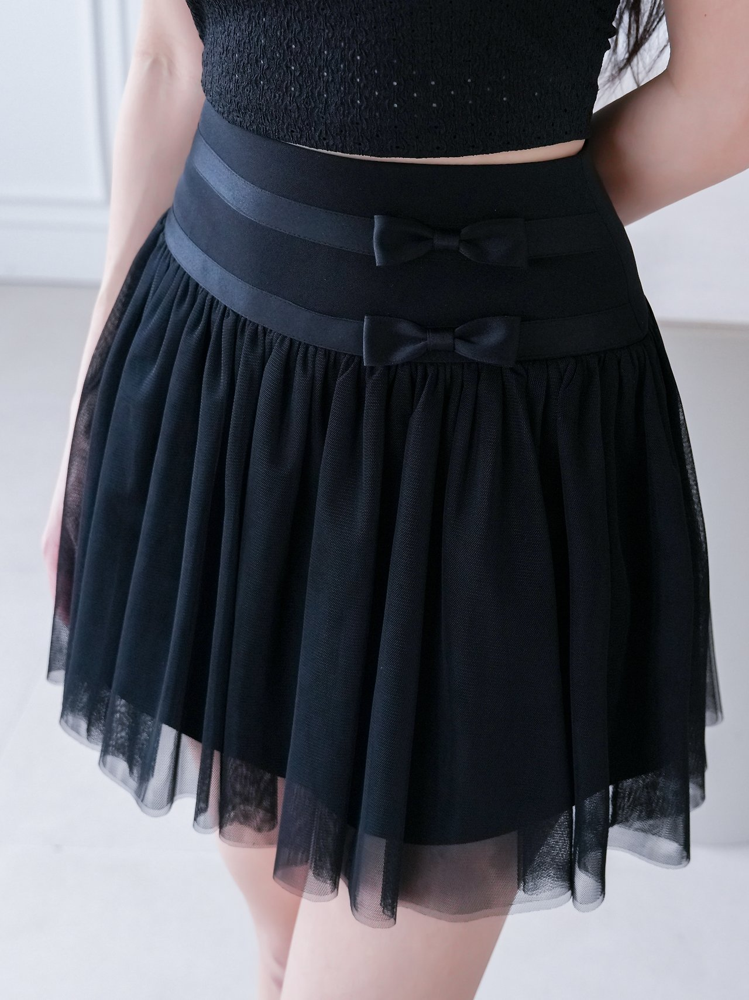
즉시 탈락 · 핵심 0 / 4
핑크 하의가 생성되어 폐기. N260007 블랙 튤/샤 스커트와 허리 리본/밴딩 디테일을 강제하여 재생성.
S941_N260007_model_draft_03
S941 + N260007 · 연핑크 / 블랙
조건부 승인 가능 · 핵심 3 / 4
B안. 판매용 감성과 튤 볼륨은 우수. 상의 프릴 폭·리본 크기·진주 단추 간격과 하의 튤 레이어의 실제 일치도를 한 번 더 보정 권장.
S942_TIA-S799_vendorref_01
S942 + S799 · 아이보리 / 블랙
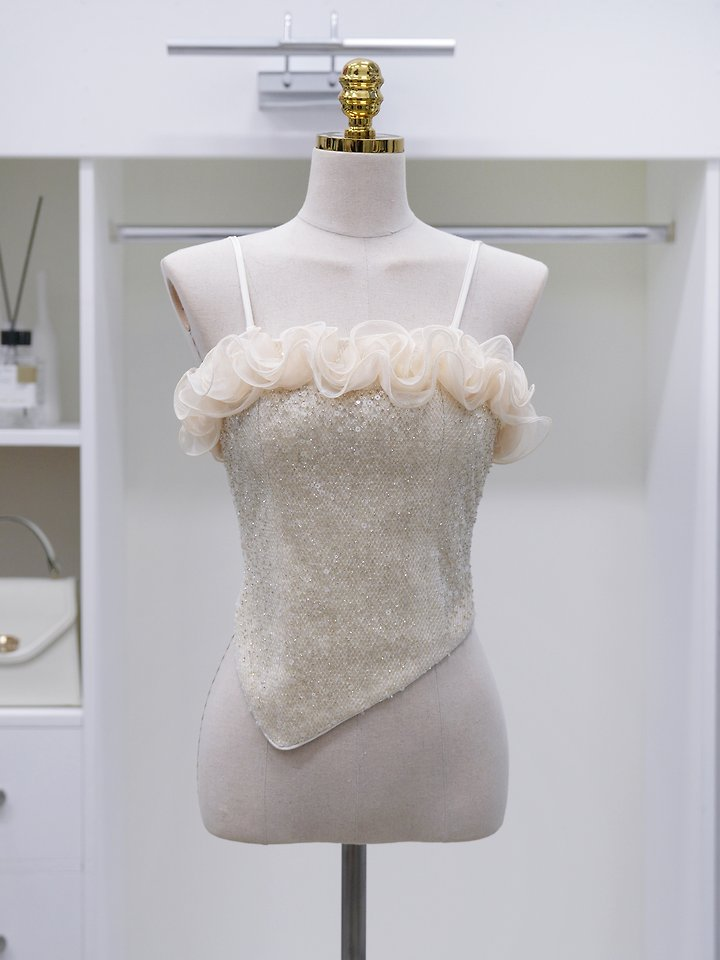
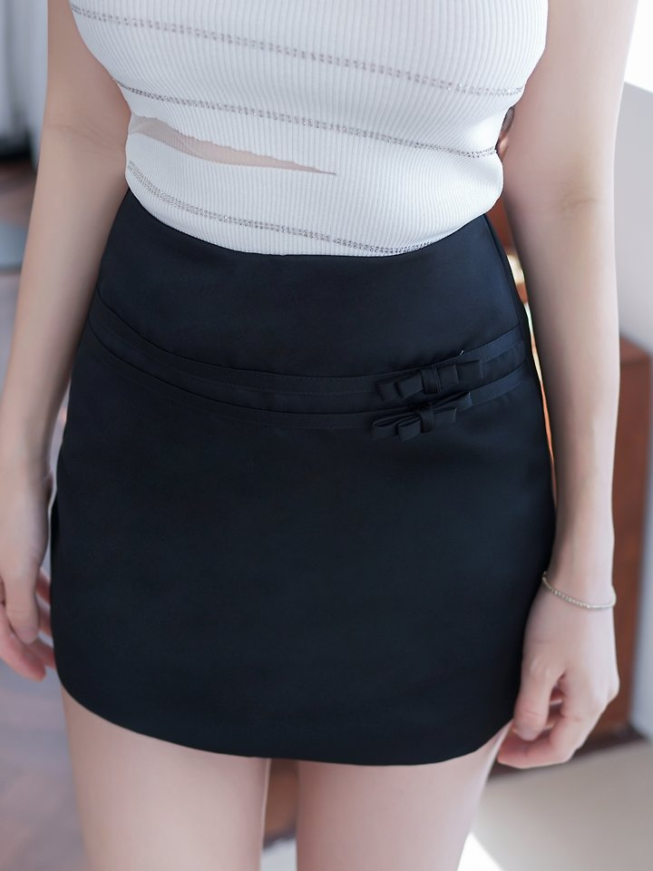
즉시 탈락 · 핵심 0 / 4
기존 vendor reference 탈락. TIA-S799_07.jpg를 실제 블랙 미니 스커트 reference 후보로 지정했으나 승인 전 model draft 생성 금지.
S943_S800_model_draft_02
S943 + S800 · 블랙 / 화이트
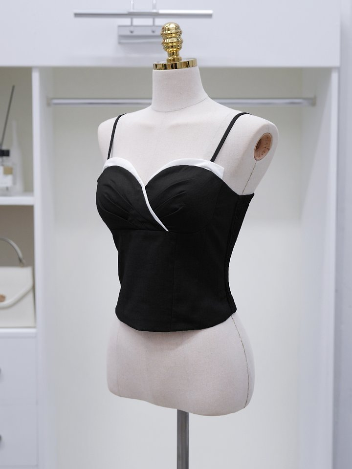
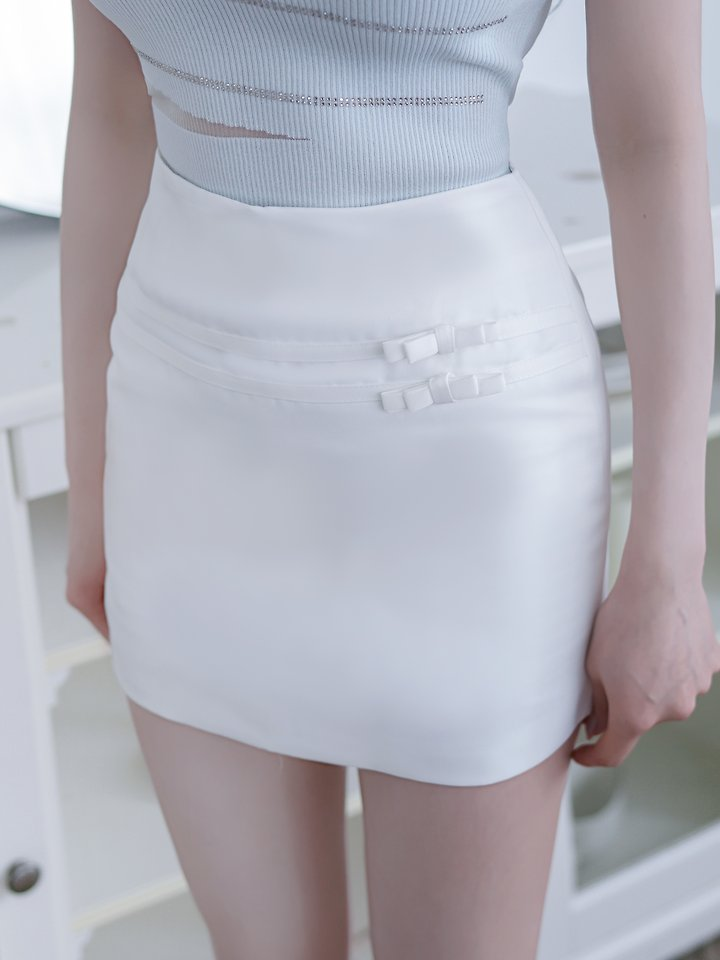
승인 가능 · 핵심 4 / 4
그레이·소라톤을 제외하고 실제 블랙+화이트 조합과 하의 길이·포인트 디테일 유지.
S944
S944 ·
상태 유지 · 핵심 - / 4
작업지시서에 따라 제외.
S945
S945 ·
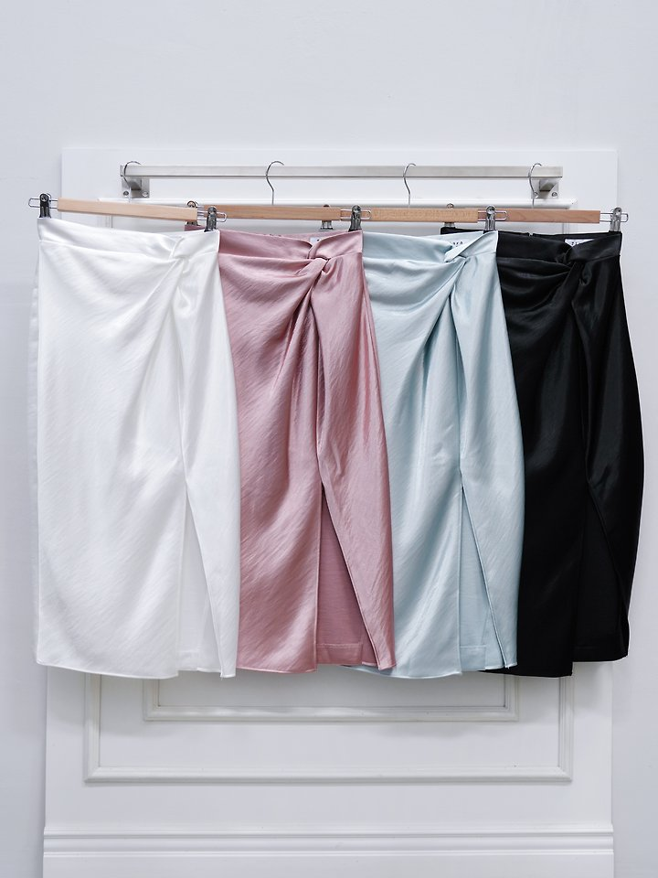
상태 유지 · 핵심 - / 4
상의 조합 확정 대기.
S946
S946 ·
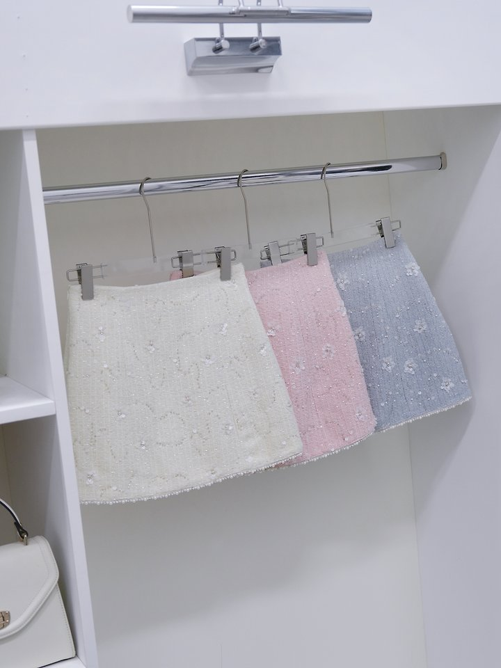
상태 유지 · 핵심 - / 4
상의 조합 확정 대기.